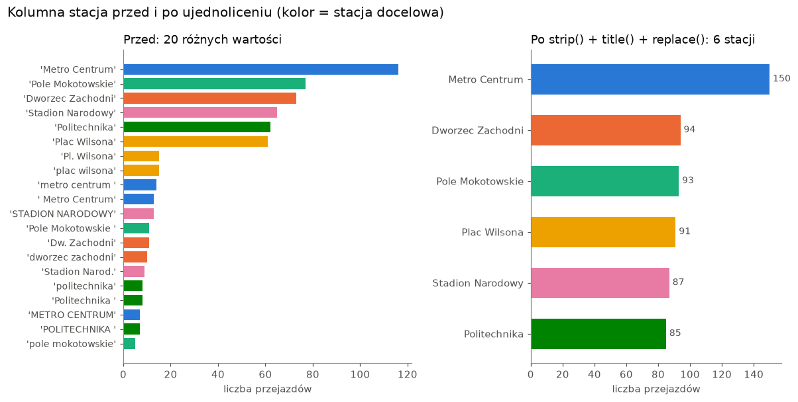
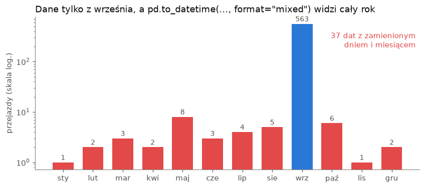
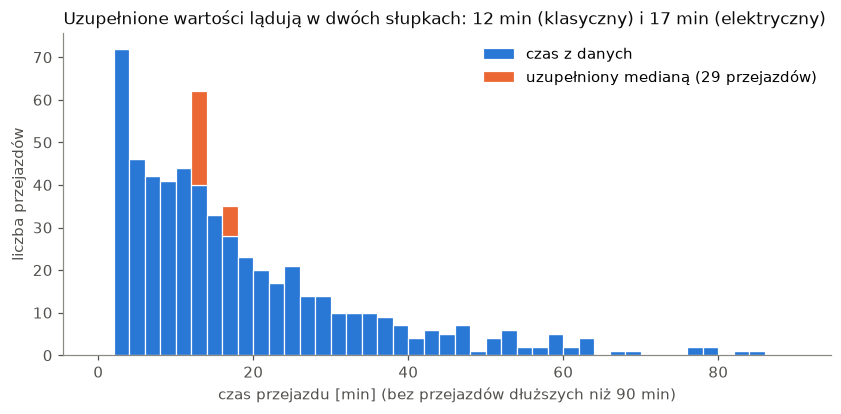
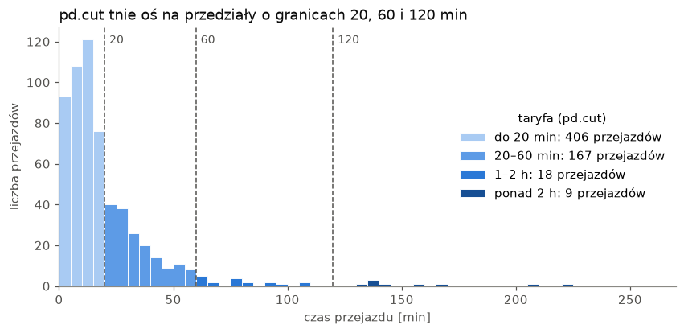
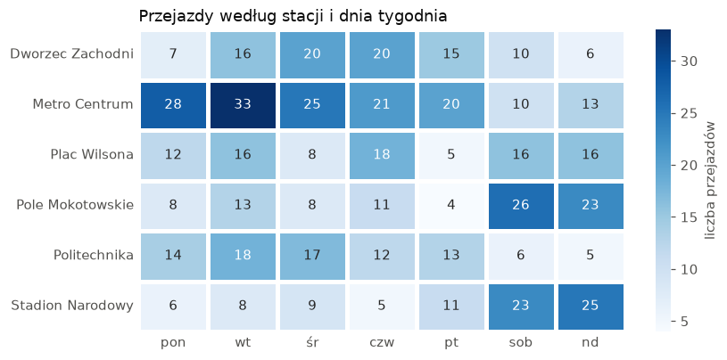
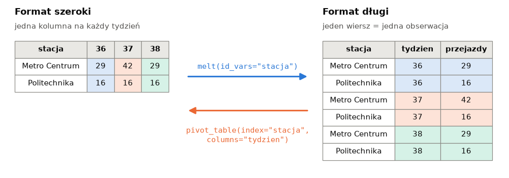

Zajęcia 2#
Czyszczenie i przetwarzanie danych#
Na poprzednich zajęciach dane udało się wczytać. Niestety „wczytane" nie znaczy „dobre". Prawdziwe dane mają dziury, powtórzone wiersze, miasto zapisane na pięć sposobów i daty w trzech formatach — bo wprowadzali je ludzie, eksportowały różne systemy, a ktoś po drodze „trochę poprawił w Excelu".
Analitycy żartują, że 80% pracy to sprzątanie danych, a 20% narzekanie na sprzątanie. Coś w tym jest: zanim policzysz pierwszą średnią, musisz mieć pewność, że liczysz na tym, na czym myślisz. Dziś robimy drugi krok naszej drogi: pozyskanie → czyszczenie → analiza → wizualizacja.
Po dzisiejszych zajęciach będziesz w stanie:
- zdiagnozować zbiór danych: znaleźć braki, duplikaty, złe typy i niespójne kategorie,
- ujednolicić tekst (
.str.strip(),.str.title(),replace), - zamienić na liczby i daty kolumny, które pandas wczytał jako tekst — także wtedy, gdy siedzą w nich śmieci typu „brak" albo daty w kilku formatach,
- świadomie zdecydować, co zrobić z brakiem: usunąć, uzupełnić czy oznaczyć,
- dodać nowe kolumny, pociąć liczby na przedziały (
pd.cut), zbudować tabelę przestawną (pivot_table) i przejść między formatem szerokim a długim (melt).
Przykłady z zajęć w Colabie
Cały materiał z tej strony jest też w gotowym notatniku — z kodem do uruchomienia. Otwórz go i uruchamiaj komórki po kolei, czytając materiał. Żeby zachować swoje zmiany, zapisz kopię: Plik → Zapisz kopię na Dysku.

Gdzie jesteśmy
W demo wracamy do miejskiej wypożyczalni rowerów z pierwszych zajęć — tym razem z eksportem przejazdów z całego września, w którym jest wszystko, co może pójść nie tak. W zadaniu wracasz do sklepu „Gadżet24": polskie zamówienia, które poznałeś miesiąc temu, przeszły przez ręce stażysty.
Plan na dziś#
| Blok | Czas |
|---|---|
| Przypomnienie zajęć 1 | 5 min |
| „Garbage in, garbage out" — typowe problemy z danymi | 10 min |
| Diagnoza i czyszczenie — braki, duplikaty, tekst, liczby, daty | 25 min |
Przetwarzanie — nowe kolumny, przedziały, tabele przestawne, melt |
15 min |
| Przerwa | 10 min |
| Zadanie 2 | 60 min |
| Omówienie | 10 min |
Przypomnienie — zajęcia 1#
- Dane przychodzą z plików, API i baz danych, a cel jest zawsze ten sam: DataFrame.
pd.read_csvma parametry na „polskie" pliki:encoding="cp1250",sep=";",decimal=",",skiprows=....- Zagnieżdżony JSON spłaszcza
pd.json_normalize, a dane z API pobierarequests.get(URL).json(). - Tabele łączy
merge(po kluczu) albomerge_asof(po „ostatniej wartości wcześniej") — i po każdym łączeniu liczymy wiersze.
Dziś zakładamy, że plik już się wczytał. Problem w tym, że w środku jest bałagan.
Garbage in, garbage out#
Stara zasada informatyki: śmieci na wejściu = śmieci na wyjściu. Najlepszy model i najładniejszy wykres nie pomogą, jeśli dane są złe. Co gorsza, złe dane rzadko powodują błąd. Najczęściej dostajesz wynik, który wygląda poprawnie, tylko jest nieprawdziwy.
Typowe problemy, które spotkasz prawie w każdym zbiorze:
| Problem | Przykład | Jak go wykryć |
|---|---|---|
| braki | puste pole, NaN |
df.isna().sum() |
| ukryte braki | „brak", „b.d.", „-", „?" w kolumnie liczbowej | kolumna ma typ str zamiast liczby |
| duplikaty | to samo zamówienie wyeksportowane dwa razy | df.duplicated().sum() |
| niespójne kategorie | „Warszawa", „warszawa ", „WAW" | df["kol"].value_counts(), unique() |
| zły typ | cena „12,50 zł" jako tekst, data jako tekst | df.info() |
| kilka formatów | „2026-09-01" i „01.09.2026" w jednej kolumnie | podgląd danych, błąd przy konwersji |
| wartości niemożliwe | czas przejazdu −14 min, wiek 230 lat | df.describe(), filtr z warunkiem |
Z brakami można zrobić trzy rzeczy — i każda jest czasem dobra, a czasem zła:
| Strategia | Kiedy | Ryzyko |
|---|---|---|
usuń wiersz (dropna) |
braków jest mało, a wiersz bez tej wartości jest bezużyteczny | tracisz dane; jeśli braki nie są losowe, wynik się przekrzywia |
uzupełnij (fillna) |
wartość da się sensownie oszacować (mediana, wartość z innej tabeli) | wymyślasz dane; zostawiają ślad na wykresach |
oznacz (nowa kolumna ..._brak) |
sam fakt braku może coś znaczyć | nic nie tracisz, ale kolumn przybywa |
W praktyce często łączy się dwie ostatnie: uzupełniasz, ale zostawiasz sobie kolumnę z informacją, które wartości były wymyślone.
Dane, na których pracujemy#
Wypożyczalnia rowerów wyeksportowała przejazdy z września 2026. Eksport skleił ktoś z dwóch systemów, więc spodziewamy się kłopotów:
| Kolumna | Co oznacza |
|---|---|
id |
numer przejazdu |
start |
data i godzina wypożyczenia |
stacja |
stacja, na której wypożyczono rower |
rower |
klasyczny albo elektryczny |
czas_min |
czas przejazdu w minutach |
oplata |
ile klient zapłacił (pierwsze 20 minut gratis) |
import pandas as pd
URL = "https://kubzal.github.io/wsb-merito/semestr_zimowy_2026_27/metody_analizy_przetwarzania_i_wizualizacji_danych/dane/przejazdy_wrzesien_2026.csv"
df = pd.read_csv(URL)
df.head()
id start stacja rower czas_min oplata
0 1 2026-09-01 06:09 pole mokotowskie klasyczny 6 0,00 zł
1 1 2026-09-01 06:09 pole mokotowskie klasyczny 6 0,00 zł
2 2 2026-09-01 06:28 Pole Mokotowskie elektryczny 35 2,00 zł
3 3 2026-09-01 06:53 Metro Centrum KLASYCZNY 16 0,00 zł
4 4 2026-09-01 07:25 Metro Centrum elektryczny 15 0,00 zł
Już w pięciu wierszach widać trzy problemy: wiersz 0 i 1 są identyczne, „pole mokotowskie" i „Pole Mokotowskie" to ta sama stacja, a „KLASYCZNY" krzyczy wielkimi literami. Zobaczmy, co jeszcze się kryje.
Diagnoza — co jest nie tak#
Zanim cokolwiek naprawisz, musisz wiedzieć, co jest zepsute. Diagnoza to zawsze te same kilka poleceń.
Typy i braki — info()#
<class 'pandas.DataFrame'>
RangeIndex: 615 entries, 0 to 614
Data columns (total 6 columns):
# Column Non-Null Count Dtype
--- ------ -------------- -----
0 id 615 non-null int64
1 start 615 non-null str
2 stacja 615 non-null str
3 rower 615 non-null str
4 czas_min 604 non-null str
5 oplata 615 non-null str
dtypes: int64(1), str(5)
memory usage: 29.0 KB
Pięć z sześciu kolumn to tekst (str). Dla stacja i rower to w porządku. Ale
czas_min i oplata powinny być liczbami, a start datą. To pierwszy sygnał
ostrzegawczy: liczba wczytana jako tekst oznacza, że w kolumnie siedzi coś,
co liczbą nie jest.
Ile braków — isna().sum()#
11 pustych pól w czas_min. Zapamiętaj tę liczbę — za chwilę okaże się, że
braków jest więcej, tylko część z nich udaje tekst.
Statystyki — describe()#
id
count 615.000000
mean 300.769106
std 173.506316
min 1.000000
25% 151.500000
50% 302.000000
75% 450.500000
max 600.000000
describe() policzył statystyki tylko dla id, bo tylko ta kolumna jest liczbą.
Tu widać też coś ciekawego: wierszy jest 615, a najwyższy numer przejazdu to 600.
Skąd 15 nadmiarowych?
Duplikaty — duplicated()#
Jest 15 wierszy, które są dokładną kopią wcześniejszego wiersza. keep=False
pokazuje wszystkie egzemplarze, łącznie z oryginałem:
id start stacja rower czas_min oplata
0 1 2026-09-01 06:09 pole mokotowskie klasyczny 6 0,00 zł
1 1 2026-09-01 06:09 pole mokotowskie klasyczny 6 0,00 zł
24 24 2026-09-02 07:51 politechnika elektryczny 4 0,00 zł
25 24 2026-09-02 07:51 politechnika elektryczny 4 0,00 zł
68 67 04.09.2026 11:27 Stadion Narodowy elektryczny 16 0,00 zł
69 67 04.09.2026 11:27 Stadion Narodowy elektryczny 16 0,00 zł
Warianty tekstu — value_counts() i unique()#
stacja
Metro Centrum 118
Pole Mokotowskie 79
Dworzec Zachodni 74
Stadion Narodowy 69
Politechnika 64
Plac Wilsona 62
Pl. Wilsona 15
plac wilsona 15
metro centrum 14
Metro Centrum 13
STADION NARODOWY 13
Pole Mokotowskie 11
Dw. Zachodni 11
dworzec zachodni 10
Stadion Narod. 10
politechnika 9
Politechnika 8
METRO CENTRUM 7
POLITECHNIKA 7
pole mokotowskie 6
Name: count, dtype: int64
Stacji jest sześć, a pandas widzi dwadzieścia różnych wartości. „Pole Mokotowskie"
pojawia się dwa razy — w jednym z nich na końcu jest spacja, której
w value_counts() nie widać. Spacje zdradza unique(), bo pokazuje napisy
w apostrofach:
<StringArray>
['klasyczny', 'elektryczny', 'KLASYCZNY ', 'Elektryczny', 'Klasyczny',
'e-bike']
Length: 6, dtype: str
'KLASYCZNY ' ma spację na końcu, a 'e-bike' to po prostu inna nazwa roweru
elektrycznego.
Wynik diagnozy
- 15 zduplikowanych wierszy,
stacja: 20 wariantów zapisu 6 stacji (wielkość liter, spacje, skróty),rower: 6 wariantów zapisu 2 typów,czas_min: tekst zamiast liczby, 11 pustych pól,oplata: tekst „0,00 zł" zamiast liczby,start: tekst zamiast daty, a w podglądzie widać dwa formaty (2026-09-04i04.09.2026).
Taka lista to pierwsza rzecz, którą robisz z nowym zbiorem. Teraz naprawiamy po kolei.
Czyszczenie#
Duplikaty#
Zostało 600 wierszy — dokładnie tyle, ile wynosi najwyższy numer przejazdu.
Pamiętaj o df = ...: metody pandas zwracają nową tabelę, a nie zmieniają
starej. Bez przypisania duplikaty zostaną.
Duplikaty, które nie wyglądają na duplikaty
duplicated() szuka wierszy identycznych co do znaku. Jeśli to samo
zamówienie raz ma „Warszawa", a raz „warszawa ", dla pandas to dwa różne
wiersze. Dlatego duplikaty sprawdza się jeszcze raz po ujednoliceniu
tekstu — albo od razu po kluczu, który musi być unikalny:
df.duplicated(subset=["id"]).sum().
Tekst — .str.strip(), .str.title(), replace#
Po .str masz dostęp do metod napisów z Pythona, wykonywanych na każdym
wierszu naraz. Łączymy je w łańcuch — każda działa na wyniku poprzedniej:
stacja
Metro Centrum 150
Pole Mokotowskie 93
Politechnika 85
Dworzec Zachodni 83
Stadion Narodowy 78
Plac Wilsona 76
Pl. Wilsona 15
Dw. Zachodni 11
Stadion Narod. 9
Name: count, dtype: int64
strip() usunął spacje z początku i końca, title() zamienił „METRO CENTRUM"
i „metro centrum" na „Metro Centrum". Z dwudziestu wariantów zostało dziewięć.
Skrótów żadna metoda tekstowa nie rozpozna — to musimy powiedzieć wprost,
słownikiem w replace ({"jak jest": "jak ma być"}):
df["stacja"] = df["stacja"].replace({
"Dw. Zachodni": "Dworzec Zachodni",
"Pl. Wilsona": "Plac Wilsona",
"Stadion Narod.": "Stadion Narodowy",
})
df["stacja"].value_counts()
stacja
Metro Centrum 150
Dworzec Zachodni 94
Pole Mokotowskie 93
Plac Wilsona 91
Stadion Narodowy 87
Politechnika 85
Name: count, dtype: int64
Sześć stacji. Różnicę dobrze widać na wykresie: każdy kolor to jedna stacja, rozsmarowana po kilku wariantach zapisu.

Gdybyś liczył przychód stacji na surowych danych, „Plac Wilsona" straciłby co trzeci przejazd na rzecz „Pl. Wilsona" i „plac wilsona". Żadnego błędu, po prostu zła liczba.
Z rowerem robimy to samo, tylko zamiast title() bierzemy lower() — typ roweru
to zwykłe słowo, a nie nazwa własna:
df["rower"] = df["rower"].str.strip().str.lower().replace({"e-bike": "elektryczny"})
df["rower"].value_counts()
replace czy map?
replace(słownik) zamienia tylko wartości, które są w słowniku, a resztę
zostawia. map(słownik) zamienia wszystkie, a tych spoza słownika — na
NaN. Do poprawiania kilku wariantów używaj replace, do zamiany całej
kolumny (np. „tak"/„nie" → 1/0) — map.
Liczby zapisane jako tekst#
Opłata wygląda tak: "2,00 zł". Usuwamy to, czego Python nie rozumie, i dopiero
wtedy zmieniamy typ:
df["oplata"] = df["oplata"].str.replace(" zł", "").str.replace(",", ".").astype(float)
df["oplata"].describe()
count 600.000000
mean 0.876667
std 2.492350
min 0.000000
25% 0.000000
50% 0.000000
75% 1.000000
max 32.000000
Name: oplata, dtype: float64
Mediana opłaty to 0 zł — ponad połowa przejazdów mieści się w darmowych 20 minutach.
Z czasem przejazdu ten sam trik nie zadziała:
W kolumnie, oprócz liczb i pustych pól, ktoś wpisywał słowo „brak". Szukanie
wszystkich takich słów ręcznie byłoby żmudne. Zamiast tego używamy
pd.to_numeric z parametrem errors="coerce" (wymuś): co da się zamienić na
liczbę — zamień, a resztę zastąp NaN.
czas = pd.to_numeric(df["czas_min"], errors="coerce")
print("braki przed:", df["czas_min"].isna().sum())
print("braki po: ", czas.isna().sum())
Przybyło 14 braków. To były ukryte braki — tekst, który udawał wartość.
Zanim je zaakceptujesz, zobacz, co dokładnie zamieniłeś na NaN:
„brak" i „b.d." (brak danych) — wszystko w porządku, to naprawdę braki. Gdyby na tej liście była np. liczba z przecinkiem „12,5", trzeba by ją najpierw poprawić, a nie wyrzucać.
errors="coerce" bez sprawdzenia to zamiatanie pod dywan
coerce nigdy nie rzuci błędem — po cichu zamieni na NaN wszystko, czego
nie rozumie. Także wartości, które dało się uratować. Dlatego zawsze porównuj
liczbę braków przed i po, i patrz, co zginęło.
Wartości niemożliwe#
Teraz czas_min jest liczbą, więc możemy zadać pytanie, którego wcześniej nie
dało się zadać: czy wszystkie czasy mają sens?
id start stacja rower czas_min oplata
333 328 16.09.2026 12:44 Dworzec Zachodni klasyczny -29.0 1.0
463 453 2026-09-23 06:06 Pole Mokotowskie klasyczny -43.0 1.0
489 478 2026-09-24 08:11 Plac Wilsona klasyczny -7.0 0.0
516 505 2026-09-25 10:28 Metro Centrum klasyczny -23.0 1.0
Przejazd nie może trwać −29 minut. Prawdziwej wartości nie znamy, więc uczciwie
jest potraktować ją jak brak. df.loc[warunek, "kolumna"] = wartość czytamy:
„w wierszach spełniających warunek, w tej kolumnie, wpisz tę wartość":
Z 11 braków widocznych na początku zrobiło się 29. Dobrze, że to wiemy, zanim policzyliśmy średni czas przejazdu.
Daty w kilku formatach#
ValueError: time data "01.09.2026 08:30" doesn't match format "%Y-%m-%d %H:%M". You might want to try:
- passing `format` if your strings have a consistent format;
- passing `format='ISO8601'` if your strings are all ISO8601 but not necessarily in exactly the same format;
- passing `format='mixed'`,
pandas ustalił format na podstawie pierwszego wiersza (2026-09-01 06:09)
i zatrzymał się na pierwszej dacie zapisanej po polsku. Komunikat podsuwa
format='mixed' — spróbujmy, a wynik od razu sprawdźmy. Wszystkie przejazdy są
z września, więc każdy inny miesiąc to błąd:

Wrześniowe przejazdy rozjechały się po całym roku, a pandas nawet nie ostrzegł. Które daty ucierpiały?
5 01.09.2026 08:30
27 02.09.2026 08:14
31 02.09.2026 11:36
40 03.09.2026 08:11
52 03.09.2026 16:33
Name: start, dtype: str
format="mixed" zgaduje format dla każdego wiersza osobno i zakłada amerykański
zapis „miesiąc.dzień". 01.09.2026 przeczytał jako 9 stycznia. Daty z dniem
powyżej 12 (16.09.2026) wyszły dobrze, bo miesiąca 16 nie ma — i właśnie dlatego
ten błąd tak łatwo przeoczyć.
Nie pozwól pandas zgadywać dat
format="mixed" i dayfirst=True to zgadywanie. Z dayfirst=True popsują
się z kolei daty ISO: 2026-09-04 stanie się 9 kwietnia. Jeśli w kolumnie
jest kilka formatów, każdy z nich podaj wprost.
Bezpieczny sposób: zamieniamy kolumnę kilka razy, za każdym razem z jednym
formatem i z errors="coerce". Każda próba trafia tylko w „swoje" wiersze,
a pozostałe zostawia jako NaT (brak daty). Potem sklejamy wyniki przez
fillna — „gdzie pierwsza próba nie trafiła, weź wynik drugiej":
iso = pd.to_datetime(df["start"], format="%Y-%m-%d %H:%M", errors="coerce")
pl = pd.to_datetime(df["start"], format="%d.%m.%Y %H:%M", errors="coerce")
df["start"] = iso.fillna(pl)
print(df["start"].isna().sum(), df["start"].dt.month.unique())
Zero braków i tylko wrzesień. Gdyby został jakiś NaT, znaczyłoby to, że jest
jeszcze trzeci format — wtedy wypisujesz te wiersze i dokładasz kolejną próbę.
| Zapis | Format |
|---|---|
2026-09-01 |
"%Y-%m-%d" |
01.09.2026 |
"%d.%m.%Y" |
20260901 |
"%Y%m%d" |
2026-09-01 08:30 |
"%Y-%m-%d %H:%M" |
Braki — usunąć, uzupełnić czy oznaczyć?#
Zostało 29 przejazdów bez czasu. Usunięcie ich wyrzuciłoby też ich opłaty i stacje — szkoda. Uzupełnimy je, ale rozsądniej niż jedną medianą dla wszystkich: rowery elektryczne jeżdżą dłużej niż klasyczne.
groupby(...).transform("median") liczy medianę w każdej grupie i „rozkłada" ją
z powrotem na wszystkie wiersze — wynik ma tyle samo wierszy co df, więc
pasuje do fillna. Przy okazji oznaczamy, które wartości będą wymyślone:
df["czas_uzupelniony"] = df["czas_min"].isna()
mediany = df.groupby("rower")["czas_min"].transform("median")
df["czas_min"] = df["czas_min"].fillna(mediany)
print(df["czas_min"].isna().sum(), df["czas_uzupelniony"].sum())
Uzupełnianie zawsze zostawia ślad. Wszystkie 29 wymyślonych czasów wpadło w dwie wartości — 12 i 17 minut — i na histogramie widać to jako dwa podejrzanie wysokie słupki:

Przy 29 z 600 wierszy to akceptowalne. Gdyby uzupełnionych była połowa,
histogram pokazywałby głównie nasze założenia, a nie dane. Kolumna
czas_uzupelniony pozwala w każdej chwili sprawdzić, czy wnioski nie zmieniają
się po wyrzuceniu wymyślonych wartości.
Sprawdzamy całość:
<class 'pandas.DataFrame'>
Index: 600 entries, 0 to 614
Data columns (total 7 columns):
# Column Non-Null Count Dtype
--- ------ -------------- -----
0 id 600 non-null int64
1 start 600 non-null datetime64[us]
2 stacja 600 non-null str
3 rower 600 non-null str
4 czas_min 600 non-null float64
5 oplata 600 non-null float64
6 czas_uzupelniony 600 non-null bool
dtypes: bool(1), datetime64[us](1), float64(2), int64(1), str(2)
memory usage: 33.4 KB
Każda kolumna ma właściwy typ i nie ma braków.
Raport „przed / po"#
Czyszczenie to seria decyzji — i ktoś (szef, recenzent, Ty za pół roku) będzie chciał wiedzieć, jakie. Dlatego kończymy je krótkim raportem:
| Problem | Ile wierszy | Co zrobiłem |
|---|---|---|
| duplikaty | 15 | usunięte (drop_duplicates) → 600 wierszy |
stacja — 20 wariantów zapisu 6 stacji |
146 | strip + title + replace dla skrótów |
rower — 6 wariantów zapisu 2 typów |
162 | strip + lower + replace("e-bike") |
oplata jako tekst „2,00 zł" |
600 | usunięte „ zł", przecinek → kropka, float |
czas_min: puste pola |
11 | uzupełnione medianą typu roweru |
czas_min: „brak", „b.d." |
14 | to_numeric(errors="coerce") → uzupełnione jw. |
czas_min ujemny |
4 | zamienione na brak → uzupełnione jw. |
start w dwóch formatach |
83 (format polski) | dwie próby to_datetime z formatem + fillna |
Przetwarzanie — nowe kolumny#
Czyste dane to dopiero połowa sukcesu. Żeby odpowiadać na pytania biznesowe, często trzeba dodać kolumny, których w eksporcie nie było. To też jest przygotowanie danych — w uczeniu maszynowym nazywa się je inżynierią cech.
Z daty: .dt#
Kiedy kolumna jest prawdziwą datą, .dt daje dostęp do jej części:
df["dzien_tyg"] = df["start"].dt.day_of_week
df["godzina"] = df["start"].dt.hour
df["weekend"] = df["dzien_tyg"] >= 5
df["tydzien"] = df["start"].dt.isocalendar().week
df[["start", "dzien_tyg", "godzina", "weekend", "tydzien"]].head()
start dzien_tyg godzina weekend tydzien
0 2026-09-01 06:09:00 1 6 False 36
2 2026-09-01 06:28:00 1 6 False 36
3 2026-09-01 06:53:00 1 6 False 36
4 2026-09-01 07:25:00 1 7 False 36
5 2026-09-01 08:30:00 1 8 False 36
day_of_week— dzień tygodnia jako liczba: 0 = poniedziałek, 6 = niedziela (1 września 2026 to wtorek),hour,month,day,year— godzina, miesiąc, dzień, rok,isocalendar().week— numer tygodnia w roku.
Nowa kolumna od razu pozwala zadać nowe pytanie. Czy w weekend jeździ się dłużej?
Dwa razy dłużej. W tygodniu rower to dojazd do pracy, w weekend — wycieczka.
Przedziały: pd.cut#
Czasem liczba jest zbyt szczegółowa. Cennik wypożyczalni nie rozróżnia przejazdu
13- i 14-minutowego — liczy się tylko, w którym progu się mieścisz.
pd.cut tnie kolumnę liczbową na przedziały:
df["taryfa"] = pd.cut(
df["czas_min"],
bins=[0, 20, 60, 120, float("inf")],
labels=["do 20 min", "20–60 min", "1–2 h", "ponad 2 h"],
)
df[["czas_min", "taryfa"]].head()
bins— granice przedziałów;float("inf")to nieskończoność, czyli „i więcej",labels— nazwy przedziałów; musi ich być o jedną mniej niż granic,- przedziały są domknięte z prawej:
(20, 60]— przejazd trwający dokładnie 20 minut wpada do „do 20 min" i jest darmowy, zgodnie z cennikiem.

Po co to wszystko? Bo przedział to kategoria, a po kategorii można grupować:
Dwie trzecie przejazdów jest darmowych. A 9 przejazdów dłuższych niż 2 godziny przyniosło więcej pieniędzy niż 18 przejazdów godzinnych. Takiego wniosku nie wyczytasz z 600 pojedynczych czasów.
Skąd 21 zł w darmowej taryfie?
Przejazdy do 20 minut powinny kosztować 0 zł. Te 21 zł to ślad po naszym sprzątaniu: część przejazdów z uzupełnionym czasem (12 albo 17 minut) w rzeczywistości trwała dłużej — i opłata to zdradza. Dane pamiętają, co im zrobiłeś. Gdyby opłata miała być podstawą analizy, lepiej byłoby odtworzyć przedział z opłaty, a nie z mediany.
observed=True mówi pandas, żeby pokazywał tylko przedziały, które wystąpiły
w danych. Bez tego parametru dostaniesz ostrzeżenie.
Tabela przestawna: pivot_table#
Tabela przestawna (pivot table) to znany z Excela sposób na zestawienie „coś × coś": wiersze to jedna kategoria, kolumny — druga, a w polach wynik funkcji agregującej. Ile przejazdów zaczyna się na każdej stacji w każdy dzień tygodnia?
tabela = df.pivot_table(index="stacja", columns="dzien_tyg", values="id", aggfunc="count")
tabela.columns = ["pon", "wt", "śr", "czw", "pt", "sob", "nd"]
tabela
pon wt śr czw pt sob nd
stacja
Dworzec Zachodni 7 16 20 20 15 10 6
Metro Centrum 28 33 25 21 20 10 13
Plac Wilsona 12 16 8 18 5 16 16
Pole Mokotowskie 8 13 8 11 4 26 23
Politechnika 14 18 17 12 13 6 5
Stadion Narodowy 6 8 9 5 11 23 25
| Parametr | Co oznacza | Tutaj |
|---|---|---|
index |
co idzie w wiersze | stacja |
columns |
co idzie w kolumny | dzień tygodnia |
values |
co liczymy | id przejazdu |
aggfunc |
jak liczymy | "count" — ile; może być "sum", "mean", "median" |
Dni tygodnia zostawiliśmy jako liczby 0–6, żeby pandas ułożył je po kolei, a polskie nazwy nadaliśmy dopiero na końcu. Z polskimi nazwami od początku kolumny ułożyłyby się alfabetycznie: czw, nd, pon, pt…
Liczby w tabeli łatwiej czytać jako kolory. Taki wykres to mapa ciepła (heatmap) — wykresami zajmiemy się na serio za dwa spotkania, ale ten jeden pokazuję już dziś:
import matplotlib.pyplot as plt
import seaborn as sns
sns.heatmap(tabela, annot=True, fmt="d", cmap="Blues")
plt.title("Przejazdy według stacji i dnia tygodnia")
plt.show()

Od razu widać dwa światy: Metro Centrum, Politechnika i Dworzec Zachodni żyją w dni robocze (dojazdy do pracy i na uczelnię), a Pole Mokotowskie i Stadion Narodowy — w weekendy (rekreacja). To gotowa wskazówka dla wypożyczalni: rowery trzeba w piątek wieczorem przewozić z centrum w stronę parków.
margins=True dokłada wiersz i kolumnę z sumami:
df.pivot_table(index="stacja", columns="rower", values="oplata", aggfunc="sum",
margins=True, margins_name="razem")
rower elektryczny klasyczny razem
stacja
Dworzec Zachodni 62.0 16.0 78.0
Metro Centrum 52.0 38.0 90.0
Plac Wilsona 58.0 44.0 102.0
Pole Mokotowskie 66.0 19.0 85.0
Politechnika 36.0 17.0 53.0
Stadion Narodowy 82.0 36.0 118.0
razem 356.0 170.0 526.0
Rowery elektryczne to jedna trzecia przejazdów, ale dwie trzecie przychodu.
Puste pola w tabeli przestawnej
Jeśli jakaś kombinacja nie wystąpiła w danych (np. żadnego przejazdu
elektrykiem z danej stacji w niedzielę), w tabeli pojawi się NaN. Przy
zliczaniu i sumowaniu brak oznacza po prostu zero — dopisz wtedy
fill_value=0.
Format szeroki i długi: melt#
Tabela przestawna produkuje format szeroki — każdy tydzień to osobna kolumna:
tygodnie = df.pivot_table(index="stacja", columns="tydzien", values="id", aggfunc="count")
tygodnie = tygodnie.reset_index()
tygodnie
tydzien stacja 36 37 38 39 40
0 Dworzec Zachodni 22 23 27 15 7
1 Metro Centrum 29 42 29 34 16
2 Plac Wilsona 15 30 21 21 4
3 Pole Mokotowskie 24 26 17 20 6
4 Politechnika 16 16 16 32 5
5 Stadion Narodowy 13 23 21 25 5
(reset_index() zamienia stację z indeksu z powrotem w zwykłą kolumnę.)
Taki format jest wygodny dla człowieka — dlatego tak wyglądają raporty
w Excelu. Ale do dalszej pracy w pandas lepszy jest format długi: jeden
wiersz = jedna obserwacja („na stacji X w tygodniu Y było Z przejazdów"). Ze
szerokiego robi go melt:
dlugi = tygodnie.melt(id_vars="stacja", var_name="tydzien", value_name="przejazdy")
print(dlugi.shape)
dlugi.head(8)
(30, 3)
stacja tydzien przejazdy
0 Dworzec Zachodni 36 22
1 Metro Centrum 36 29
2 Plac Wilsona 36 15
3 Pole Mokotowskie 36 24
4 Politechnika 36 16
5 Stadion Narodowy 36 13
6 Dworzec Zachodni 37 23
7 Metro Centrum 37 42
id_vars— kolumny, które zostają bez zmian (identyfikują wiersz),var_name— nazwa nowej kolumny, do której trafią nazwy dawnych kolumn (36, 37, …),value_name— nazwa kolumny na wartości.
6 stacji × 5 tygodni = 30 wierszy. pivot_table i melt to dwie strony tej
samej operacji:

Po co format długi? Bo na nim działa wszystko, co już znasz — groupby,
filtrowanie, merge — i wszystkie biblioteki do wykresów (seaborn, Plotly)
oczekują danych właśnie w tym kształcie. Ile przejazdów było w każdym tygodniu?
Na formacie szerokim musiałbyś sumować pięć kolumn osobno. (Tydzień 40 jest krótki, bo wrzesień kończy się w środę.)
Raport z Excela do analizy
W pracy często dostaniesz plik w formacie szerokim: miesiące, sklepy albo
produkty w kolumnach. Pierwsze, co z nim robisz po wczytaniu, to melt.
Zapis wyniku#
Czyste dane zapisujesz do nowego pliku, a surowe zostawiasz w spokoju. Jeśli w czyszczeniu był błąd, poprawiasz kod i uruchamiasz go od nowa na surowych danych. Na tym polega przewaga notatnika nad ręcznym poprawianiem w Excelu: każdą decyzję widać i każdą można cofnąć.
Ściągawka#
| Chcę… | Kod |
|---|---|
| typy i braki naraz | df.info() |
| ile braków w kolumnach | df.isna().sum() |
| ile duplikatów | df.duplicated().sum() |
| duplikaty po kluczu | df.duplicated(subset=["id"]).sum() |
| pokazać duplikaty z oryginałami | df[df.duplicated(keep=False)] |
| usunąć duplikaty | df = df.drop_duplicates() |
| warianty tekstu (ze spacjami) | df["kol"].unique() |
| ujednolicić tekst | df["kol"].str.strip().str.title() (albo .str.lower()) |
| poprawić wybrane wartości | df["kol"].replace({"stara": "nowa"}) |
| usunąć fragment tekstu | df["kol"].str.replace(" zł", "") |
tekst na liczbę (śmieci → NaN) |
pd.to_numeric(df["kol"], errors="coerce") |
| tekst na datę w danym formacie | pd.to_datetime(df["kol"], format="%d.%m.%Y", errors="coerce") |
| skleić dwie próby | proba1.fillna(proba2) |
| zamienić wartości spełniające warunek | df.loc[df["kol"] < 0, "kol"] = np.nan |
| uzupełnić medianą grupy | df["kol"].fillna(df.groupby("grupa")["kol"].transform("median")) |
| oznaczyć braki | df["kol_brak"] = df["kol"].isna() |
| część daty | df["data"].dt.month, .dt.day_of_week, .dt.hour |
| przedziały | pd.cut(df["kol"], bins=[0, 20, 60], labels=["mało", "dużo"]) |
| tabela przestawna | df.pivot_table(index="a", columns="b", values="c", aggfunc="sum", fill_value=0) |
| sumy w tabeli przestawnej | pivot_table(..., margins=True, margins_name="razem") |
| szeroki → długi | df.melt(id_vars="a", var_name="b", value_name="c") |
| indeks z powrotem w kolumnę | df.reset_index() |
| zapisać wynik | df.to_csv("plik.csv", index=False) |
Zadanie 2 — Sprzątanie po stażyście (12 pkt)#
- Czas: ok. 60 minut
- Środowisko: Google Colab
- Oddanie: notatnik
.ipynbna Moodle
Zarząd „Gadżet24" poprosił o zestawienie polskich zamówień z 2025 roku razem z miastem klienta. Stażysta dostał to zadanie na swój pierwszy dzień: skleił eksporty z kilku dni, miasta przepisał „z pamięci", a ceny skopiował z faktur. Plik działa, tylko liczyć na nim nie można. Twoim zadaniem jest go uratować — i zostawić po sobie raport, co z nim zrobiłeś.
- zamowienia_pl_2025.csv — 2062 wiersze
| Kolumna | Co oznacza |
|---|---|
zamowienie_id |
numer zamówienia — w czystych danych każdy występuje raz |
data |
data złożenia zamówienia |
klient_id |
identyfikator klienta |
miasto |
miasto klienta — w czystych danych jedno z sześciu: Warszawa, Kraków, Gdańsk, Wrocław, Poznań, Łódź |
produkt, kategoria |
co kupiono |
sztuki |
ile sztuk |
cena |
cena jednej sztuki w złotych |
Rób części po kolei i pokaż mi wynik każdej z nich, gdy będzie gotowa — punktacja zależy od tego, ile zdążysz na zajęciach.
Część 1 — Diagnoza i sprzątanie (ok. 35 min)#
URL = "https://kubzal.github.io/wsb-merito/semestr_zimowy_2026_27/metody_analizy_przetwarzania_i_wizualizacji_danych/dane/zamowienia_pl_2025.csv"
- Diagnoza. Wczytaj plik do
df. Sprawdź i wypisz: braki w każdej kolumnie, liczbę zduplikowanych wierszy i zduplikowanych numerów zamówień, wszystkie warianty zapisu miasta, formaty daty oraz wartości w kolumniecena, które nie są liczbą. - Sprzątanie. Doprowadź dane do stanu, w którym:
- każde zamówienie występuje dokładnie raz,
miastoma tylko sześć poprawnych nazw (z polskimi znakami),datajest datą (typdatetime64), a każdy wiersz ma poprawny dzień i miesiąc,cenajest liczbą, a brakującą cenę uzupełniasz medianą ceny tego samego produktu.
- Raport. W komórce tekstowej (Markdown) zrób tabelę „przed / po" taką jak w materiale: każdy problem, ile wierszy dotyczył i co z nim zrobiłeś.
Komórka sprawdzająca — skopiuj i uruchom:
print(f"wiersze: {len(df)} (powinno być 2012)")
print(f"unikalne id: {df['zamowienie_id'].nunique()} (powinno być 2012)")
print(f"miasta: {sorted(df['miasto'].unique())}")
print(f"data: {df['data'].dtype}, {df['data'].min():%Y-%m-%d} – {df['data'].max():%Y-%m-%d}")
print(f"w marcu: {(df['data'].dt.month == 3).sum()} (powinno być 180)")
print(f"cena: {df['cena'].dtype}, braki: {df['cena'].isna().sum()} (powinno być float64, 0)")
print(f"przychód: {(df['sztuki'] * df['cena']).sum():,.2f} (powinno być 1,169,058.91)")
Część 2 — Przetwarzanie (ok. 25 min)#
Każdy liczy na swojej kategorii i swoim mieście. Wpisz swój numer albumu i uruchom komórkę:
NR_ALBUMU = 123456 # ← wpisz swój numer albumu
KATEGORIE = ["Elektronika", "AGD", "Dom", "Akcesoria"]
MIASTA = ["Warszawa", "Kraków", "Gdańsk", "Wrocław", "Poznań", "Łódź"]
KATEGORIA = KATEGORIE[NR_ALBUMU % 4]
MIASTO = MIASTA[NR_ALBUMU // 4 % 6]
print(KATEGORIA, MIASTO)
- Dodaj do czystego
dftrzy kolumny:wartosc— wartość zamówienia (sztuki × cena),miesiac— numer miesiąca (1–12),przedzial— przedział wartości zamówienia:do 200 zł,200–500 zł,500–1000 zł,ponad 1000 zł(granice: 0, 200, 500, 1000, nieskończoność).
- Dla zamówień ze swojej kategorii zbuduj tabelę przestawną
tabela: miasta w wierszach, miesiące w kolumnach, w polach przychód (sumawartosc), bezNaN, zaokrąglony do pełnych złotych. - W komórce tekstowej odpowiedz:
- w którym miesiącu Twoje miasto miało najwyższy przychód z Twojej kategorii i ile on wyniósł,
- który przedział wartości jest w Twojej kategorii najczęstszy i jaki procent jej zamówień do niego należy.
Komórka sprawdzająca:
print(f"wariant: {KATEGORIA}, {MIASTO}")
print(f"przedziały (wszystkie kategorie): {df['przedzial'].value_counts().sort_index().tolist()}"
" (powinno być [643, 734, 308, 327])")
print(f"tabela: {tabela.shape} (powinno być (6, 12))")
print(f"braki: {tabela.isna().sum().sum()} (powinno być 0)")
print(f"przychód kategorii: {df.loc[df['kategoria'] == KATEGORIA, 'wartosc'].sum():,.2f}")
Wskazówki#
- Zrób sobie kopię surowych danych (
surowe = df.copy()) zaraz po wczytaniu. Przyda się do raportu „przed", a jeśli coś zepsujesz, nie musisz pobierać pliku od nowa. - Wariantów miasta jest ponad 30. Najpierw
strip()+title()(albolower()), potemunique()— to, co zostanie, poprawiasz słownikiem wreplace. Uważaj:"WAW".title()daje"Waw", a nie"WAW". - Daty mają trzy formaty. Na ich rozpoznanie wystarczy
unique()na kilku wierszach albodf["data"].str.len().value_counts(). Nie używajformat="mixed"— wynik „w marcu" od razu Cię zdradzi. - Cena: najpierw usuń „ zł", potem wszystkie spacje (
"1 199,00"→"1199,00"), potem zamień przecinek na kropkę i dopiero wtedypd.to_numeric(..., errors="coerce"). Policz braki przed i po. - Duplikatów jest więcej, niż pokazuje
duplicated()na surowych danych. Porównaj zduplicated(subset=["zamowienie_id"])i sprawdź jeszcze raz po ujednoliceniu miasta i daty. - Mediana ceny tego samego produktu:
df.groupby("produkt")["cena"].transform("median"). - Część 2, punkt 2: najpierw przefiltruj zamówienia z Twojej kategorii, potem
pivot_table(..., aggfunc="sum", fill_value=0)i.round(0). Miesiąc z maksimum w wierszu znajdziesz przeztabela.loc[MIASTO].idxmax(). - Procent zamówień w przedziałach:
value_counts(normalize=True)zwraca udziały zamiast liczebności. - Wynik się nie zgadza? Runtime → Restart and run all — bardzo często winna jest komórka uruchomiona dwa razy albo wcale.
Punktacja (12 pkt)#
| Punkty | Za co |
|---|---|
| 12 pkt | obie części zrobione na zajęciach i pokazane prowadzącemu |
| 8 pkt | jedna z dwóch części zrobiona na zajęciach i pokazana prowadzącemu |
| 4 pkt | zadanie dokończone po zajęciach i wysłane na Moodle w terminie |
| 0 pkt | brak rozwiązania albo wysłane po terminie |
Termin przesłania na Moodle: 2026-12-19 (dzień przed kolejnymi zajęciami).
Serio, róbcie to na zajęciach
Ta sama godzina pracy jest warta 12 pkt tu i teraz albo 4 pkt w domu. Mamy tylko cztery zadania w całym semestrze, więc każde z nich to 12% oceny końcowej. Jestem na sali po to, żeby Wam pomagać — korzystajcie z tego, zamiast walczyć z tym samym problemem wieczorem w domu.